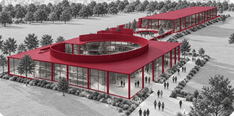

Drawing to building
Signature scroll moment, pinned for about 3 screens. Scroll draws Aura Theatre's axonometry line by line (SVG stroke trace of her drawing). The lines fill in as her red massing model, then the red drains into the sunset render. Reduced motion shows the three states as a static sequence.
 scroll 15%Her line drawing traces itself
scroll 15%Her line drawing traces itself
scroll 55%Massing fills in, her red model scroll 100%Aura Theatre
scroll 100%Aura Theatre